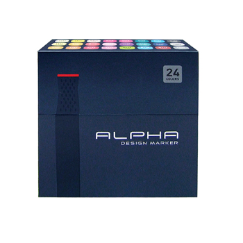
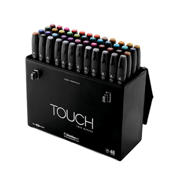
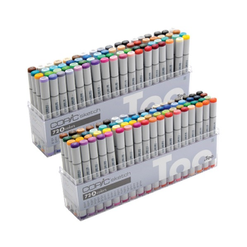

|  |
알파 디자인 마카 알파 디자인 마카는 부드럽고 퍼지고 전체적으로 차분하고 |
신한 TOUCH 마카신한 터치 마카는 선명하고 짙은 색감이 특징으로 전체적인 |
 |
 |
코픽 스케치 마카코픽 스케치 마카는 맑고 투명한 색감이 특징인 마카입니다. |
소속: 계원예술대학교 디지털미디어 디자인과 | 이메일: clari4916@gmail.com
제작기간: 2023.11.29 ~ 2023.12.06
COPYRIGHT 2023. 남예은 . ALL RIGHTS RESERVED.